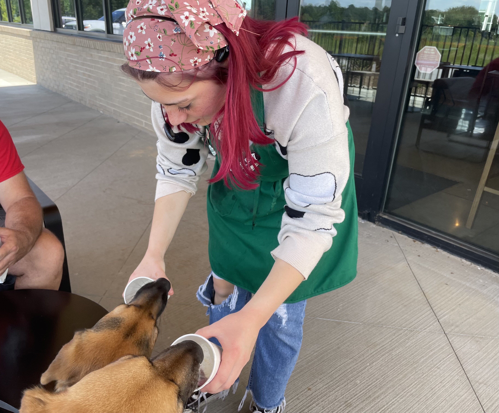
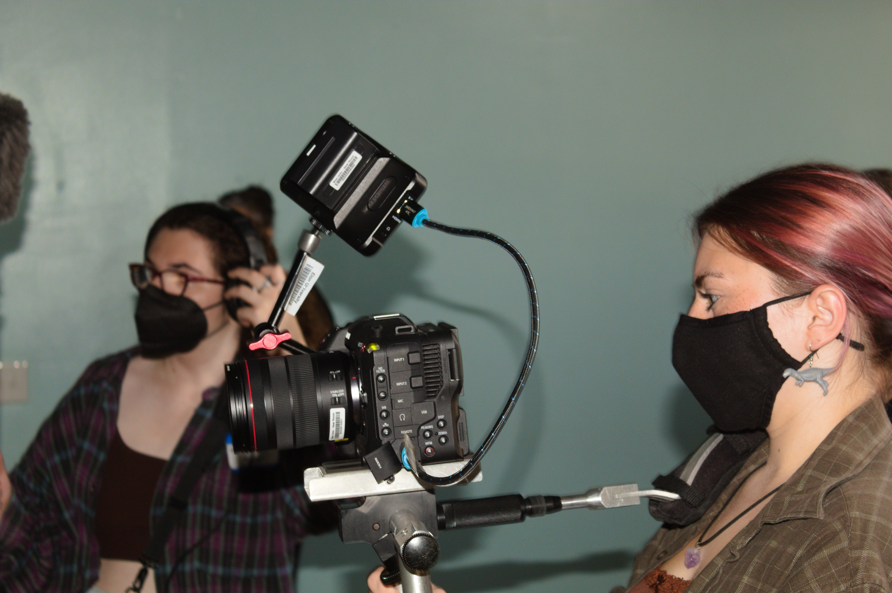

Professional Life

I have worked in customer service for many years and in the past year have begun to work on films to get more experience with my major. From July 2019 to April 2020 I worked at a licensed Starbucks. Then, from July 2020 to May 2021 I worked at Good to Go Raw Juice Bar, then worked at a corporate Starbucks from May 2021 to August 2021. After attending my first year at Elon, I returned to Greenville at worked at Starbucks once more from June 2022 to August 2022.

Student Life
Since December 2021, I have worked on film sets with Cinelon on campus. I have been a second assistant camera, first assistant camera, first assistant director, sound mixer, boom operator, script supervisor, production designer, and a production assistant. My favorite thing to do on film sets is production design and camera team. I love designing sets and costumes for films, making the directors vision come to life is very rewarding. I also love cameras and think the technology side of things is very interesting, so I am always trying to learn more.
